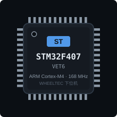
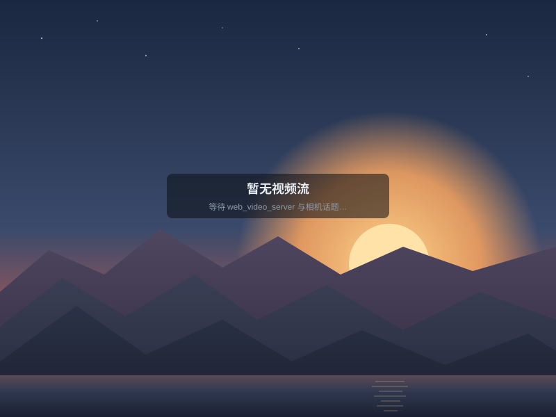

系统架构 (Wheeltec 底盘 + Lebai 机械臂 · 点击模块跳转)
rosbridge :9090 · video :8081
target_frame TF → /obj_grab_service → 夹爪
绿点 = 对应数据流在线（底盘遥测 / 机械臂驱动 / 抓取目标）。底盘与机械臂合并在同一 colcon 工作空间，经同一个 rosbridge 通信；机械臂相机（/camera_arm/*）同时服务底盘 YOLO 跟随与机械臂抓取识别；五种抓取方案共用 target_frame + /grab_target/distance + /obj_grab_service 一套抓取流程。
3D 视图 (three.js · 雷达)
图层：Grid / 坐标轴 / LaserScan(/scan) / Odom 轨迹。TF 直接订阅 /tf+/tf_static，无需 tf2_web_republisher。融合输出 /scan 来自 double_lidar_fusion；单台故障时可把 /scan 改成 /scan1 或 /scan2 看单雷达。
遥测
图表
雷达 (double_lidar_fusion)
double_lidar_fusion 订阅 /scan1+/scan2 融合为 /scan（360°）。某台离线时自动只用在线雷达；两台都离线则停止输出。点云可视化见"系统总览"的 3D 视图。
下位机 STM32F407 (turn_on_wheeltec_robot · serial)

下位机 STM32F407 经串口（serial 包，帧头 0x7B）连接 turn_on_wheeltec_robot：/odom、/PowerVoltage 等话题只有串口帧校验通过才发布，因此话题有数据 = 下位机在线（2 秒无帧判离线）。电压低于 20V 时底盘禁止移动：状态变化与持续低压会记录到上方事件栏，驱动节点同时向 /rosout 打 WARN（见本页日志面板）。
超声波 (m)
语音组件 (wheeltec_mic)
来自 wheeltec_mic：唤醒 /awake_flag、声源角 /awake_angle、识别 /voice_words；播报经 tts_make 订阅 /tts_text。需先启动麦克风语音 launch（如 mic_init.launch.py / base.launch.py）。
相机 (web_video_server MJPEG)

流从 http://<host>:<port>/stream?topic=... 拉取。astra_camera 默认发布车上 /camera/color/image_raw 与机械臂 /camera_arm/color/image_raw（含 depth/ir）。深度流把 topic 改成 /camera/depth/image_raw 即可。
日志 (/rosout)
速度控制 (/cmd_vel)
参数 (/wheeltec_robot)
提示：参数对静态变量生效需要重启机器人节点；odom_*_scale 在运行中可即时使用。节点下拉来自 ros.getNodes()，连接后自动填充。
巡线 (二维码 / simple_follower_ros2)
启动：ros2 launch simple_follower_ros2 line_follow_qr_fixed.launch.py。纯巡线 line_follow_plain（无随机分叉）+ qr_detector + cmd_arbiter：二维码内容如 path:left30 / path:right45 / path:stop 经 /qr_code/data 让 cmd_arbiter 在路口定角转向，输出最终 /cmd_vel。OpenCV 窗口转发：节点把原本 cv2.imshow 的画面发布成 Image（publish_debug 默认开）——QR 检测 HUD → /qr_code/debug_image、巡线掩码 → /line_follow/debug_image，经 web_video_server 在此显示，机器人无显示器也能看。需本地窗口时启动加 show_image:=true；无 trackbar 时巡线颜色用参数 line_color(0红/1绿/2蓝/3黄/4黑)。
KCF 跟踪画面 (/KCF_image)
启动：ros2 launch wheeltec_robot_kcf wheeltec_robot_kcf.launch.py（经仲裁器：wheeltec_robot_kcf_arbiter.launch.py）。目标框需在机器人端 OpenCV 窗口用鼠标框选；标注画面发布到 /KCF_image。跟踪距离可用上方滑块实时调（参数 /image_converter targetDist_）。经仲裁器时跟踪速度走 kcf/cmd_vel，键盘可随时打断。
KCF 参数 (/image_converter)
距离 / 转向 PID 可在此实时调参（等价 ros2 param set /image_converter ...）。先点"读取当前值"拉取，再修改"应用"。线速度/角速度在节点内被限制在 ±0.35。
YOLO 检测 (yolo_ros / mgonzs13)
由 yolo_ros 提供检测。启动：ros2 launch yolo_bringup yolo_wheeltec.launch.py（已把输入设为 /camera/color/image_raw）。标注画面来自 /yolo/debug_image（use_debug），目标列表来自 /yolo/detections（yolo_msgs/msg/DetectionArray：class_name / score，开启 use_tracking 时带跟踪 id）。改"检测话题"为 /yolo/tracking 可看带 ID 的跟踪结果。
VLA 语音导航 (/vla)
指令发布到 /vla/instruction；麦克风识别走 /voice_words。决策与导航状态来自 /vla/status，目标点见 RViz 或 /goal_pose。需先启动 vla_navigator 节点与 rosbridge。
机械臂状态 (lebai_driver /robot_status)
状态来自乐白驱动 /robot_status（lebai_interfaces/RobotStatus），3 秒无数据视为离线显示 "—"。需先启动驱动：ros2 launch lebai_driver robot_state.launch.py。抓取控制权来自 arm_arbiter（随抓取 launch 启动）。
系统控制 (/system_service)
按钮直接调用 /system_service/*（std_srvs/Empty），需启动 system_service.launch.py。红色按钮有二次确认；急停立即下发不确认。执行结果见下方"机械臂事件"。
夹爪 (/gripper_status · /io_service)
0 = 闭合，100 = 张开。服务 /io_service/set_gripper_position / set_gripper_force（SetGripper），需启动 io_service.launch.py。
关节状态 (/joint_states)
由 lebai_driver robot_state 发布（含夹爪关节 gripper_*）。
关节运动 (/motion_service/move_joint)
⚠ 调用 /motion_service/move_joint（MoveJoint）会真实移动机械臂，执行前有二次确认；需启动 motion.launch.py。"填入当前关节角"读取 /joint_states 中 lebai_joint_1..6 的实时值；预设位按钮只填入数值（观察位/零位来自 MoveIt SRDF 命名位姿，FK 演示位即 arm_demo fk_demo 的目标关节角），点"执行运动"才会动。
位姿运动 IK (/motion_service · cartesian · arm_demo 同款)
⚠ 给定末端目标位姿（机械臂基座坐标系，姿态为 RPY 角度制，内部转四元数下发），逆运动学由乐白控制器解算（等价 movej/movel 到 CartesianPose），不经 MoveIt、无碰撞检查——执行前请确认目标位姿无碰撞；均有二次确认，需启动 motion.launch.py。"执行运动"为关节插补，"直线运动"为笛卡尔直线。原 arm_demo 演示与本页等价：FK = 上方关节运动到 FK 演示位，IK = 本卡到 IK 演示位（x=0.6, y=0.17, z=0.46）；要走 MoveIt 碰撞规划仍可 ros2 launch arm_demo fk_demo.launch.py / ik_demo.launch.py。
抓取与仲裁 (grab_demo · 各方案共用)
所有抓取方案（HSV / YOLO / KCF / ArUco / VLM，见上方子页）共用同一套流程：识别节点持续广播 target_frame TF 并把目标深度发到 /grab_target/distance，"抓取该 TF 目标"调用 /obj_grab_service（GrabObject）驱动机械臂执行。"手动接管 / 释放"经 /arm_arbiter/manual_takeover|manual_release，可随时打断自动抓取。事件时间线记录本页所有命令与结果。
机械臂相机 (web_video_server MJPEG)
与"各组件状态"页共用 web_video_server 端口/画质设置。各抓取方案的调试画面见对应子页。
HSV 颜色抓取 (color_grab / color_node)
启动：ros2 launch grab_demo color_grab.launch.py（含相机 + 驱动 + MoveIt + 闭环抓取 + 仲裁）。按 HSV 阈值找最大色块，最轻量；默认红色（hue 0–10）。阈值可在下方实时调参，详见 grab_demo/HSV_GUIDE.md。
HSV 阈值滑条 (/color_node · 拖动即生效)
拖动滑条即时下发（等价 ros2 param set /color_node ...），对照上方调试画面调到只剩目标色块即可。先点"读取当前值"同步节点当前阈值。H 范围 0–180（OpenCV 半角），红色跨界时用 H[0,10] 或 H[160,180]。
YOLO 抓取 (yolo_ros_grab / yolo_ros_node)
启动：ros2 launch grab_demo yolo_ros_grab.launch.py（yolo_ros + 桥接 + 闭环抓取，CPU/GPU 皆可）。点上方物体按钮即把该类别设为抓取目标（实时写桥接节点的 target_label 参数，调试图的框会立刻只跟该类别），再点"抓取目标"执行抓取；"清除筛选"恢复抓置信度最高的任意物体。同类多个物体按 select_mode（默认置信度最高）取一个。也可用下方参数卡手填 target_label / conf_threshold，详见 grab_demo/YOLO_ROS_GUIDE.md。Jetson TensorRT 版用 yolo_grab.launch.py。
目标筛选参数 (/yolo_ros_node)
target_label 优先于 target_class；多个候选时按 select_mode（默认置信度最高）选一个。
KCF 跟踪抓取 (kcf_grab / kcf_node)
启动：ros2 launch grab_demo kcf_grab.launch.py。直接在上方画面拖拽即可框选跟踪目标——框选坐标换算为图像像素后发布到 /kcf_node/select_bbox（sensor_msgs/RegionOfInterest），节点收到立即用该框重新播种；不框选时默认 HSV 自动播种（阈值见下方滑条，默认红色），跟丢自动重播种（reinit_on_loss）。"重新播种 (HSV)" 调 /kcf_node/reinit 放弃当前目标。详见 grab_demo/KCF_GUIDE.md。
HSV 播种阈值滑条 (/kcf_node · 拖动即生效)
播种 = 用 HSV 找到第一个目标框交给 KCF；手动框选优先于 HSV。跟踪开始后改滑条只影响下次重播种。先点"读取当前值"同步节点当前阈值。
ArUco 标记抓取 (aruco_grab / aruco_node)
启动：ros2 launch grab_demo aruco_grab.launch.py。识别 ArUco 标记（边长默认 0.05m，launch 参数 markerLength）并广播目标 TF。aruco_node 不发布调试图，这里显示机械臂相机原始画面；标记位姿可在 RViz 查看。
VLM 自然语言抓取 (vlm_grab / vlm_node)
启动：ros2 launch grab_demo vlm_grab.launch.py。视觉语言模型按一句话（可间接表达）选物抓取：指令发 /vlm/instruction，理解结果见 /vlm/result，需确认时点"确认抓取"（发 /vlm/confirm）。配 voice_instruction_node（本地 Whisper）可直接语音下指令。详见 grab_demo/VLM_GUIDE.md、VOICE_GUIDE.md。
联系作者
面向"Wheeltec S300 移动底盘 + Lebai LM3 机械臂"移动抓取平台的轻量级 Web 仪表盘。底盘部分：实时遥测、速度控制、参数调节、3D 视图、相机预览、日志，以及巡线 / KCF / YOLO / VLA 功能模块；机械臂部分：驱动状态、系统/夹爪/关节控制，以及 HSV / YOLO / KCF / ArUco / VLM 五种视觉抓取方案。全部通过 rosbridge 与 ROS 2 通信。
- 项目仓库github.com/heisd/wheeltec_s300
- 维护者heisd
- 问题反馈GitHub Issues
- 许可证Apache-2.0
有问题或建议？欢迎在 GitHub 提交 Issue 或 Pull Request，一起把这个仪表盘做得更好。